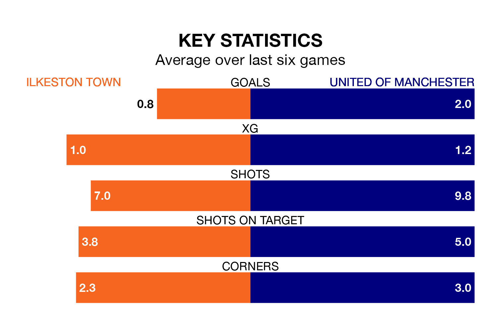

Ilkeston Town welcome United of Manchester to New Manor Ground on Saturday looking to pick up points to end their three-game losing streak.
Ilkeston's struggles have left them with seven points from their last six Northern Premier League matches, while their opponents have earned 10 from a possible 18.
With 39 goals in 25 games so far this season, Ilkeston are scoring at below the league average rate with 1.6 goals per game. But they are conceding fewer than average too, letting in 40 goals at a rate of 1.6 per game.
United of Manchester are also below average scorers, with 1.6 goals per game, compared to a league average of 1.7. They have conceded 2.0 goals per game.
F.C. United are 16th in the table after 23 games, of which they have won nine and drawn four, earning 31 points.
Town are three places ahead of the away side in 13th, with 10 wins and three draws putting them on 33 points.
Ilkeston's last match was on Monday, a 3-0 loss against Whitby Town.
United of Manchester beat Ashton United 2-1 last time out, on December 26.
Updated: 10:36, 03/01/24